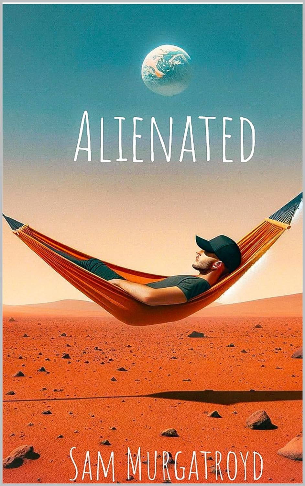

About Sam
I'm a budding writer from Manchester, England. Growing up, I had a
bit of a rocky journey with my mental health. It was tough, but I
learned a lot from those experiences. I started writing what later
turned into my first book when I was 14, primarily because I felt
like I just didn't fit in with the world around me. Writing down my
thoughts and ideas was like therapy for me, a way to make sense of
things. And when I shared them with a few mates, they found it
helpful too. That's when I realised that my early struggles weren't
just obstacles; they were tools I could use to help others through
my writing.
I initially began writing nonfiction and after releasing
‘Alienated’ decided to begin writing fiction. I decided to make this
change not only to help depict my message further through characters
such as in Robin’s Bench but also to be able to be more expressive
of my ideas through the boundless world of fiction writing. All my
life I have wanted to help others in whichever way I can, I have
worked in mental health services, the probation service and also
children’s care homes.
I'm on a mission to make a positive
difference with my words, especially for those who feel out of place
in this world, to show them they're not alone. I know what it's like
to hit rock bottom, and I want to spread the word that there's
always a way out. Sometimes it can be as simple as having a new way
of looking at life.
Books
Alienated

Alienated is a powerful, thought-provoking book that offers a new
lens to view the world through. It is packed with eye-opening
perspectives and actionable wisdom to give the reader a clearer
vision while navigating life’s complexities. This book challenges
the world you thought you knew, using fascinating metaphors to
deconstruct the world around us. The author also provides insights
into his journey and past hardships that have molded the
perspective he now holds.
Sam speaks about how he spent a lot of his life dealing with a
continual sense of separation from everybody else, like he saw
things in human nature that his peers never did. He never seemed
to find his place, worrying that a complete change of character
was necessary for acceptance. This vicious pattern of thought
eventually led him to wander alone down a dark mental path with
seemingly no way out.
He eventually switched his approach, from the ceaseless
desperation of acceptance to embracing that very feeling of
Alienation he has carried all along. It was from this point that
he found fulfillment in his life. The only right thing to do was
to spread his insights to readers around the world. Readers who
may be currently wandering down that same dark path feeling like
they have no place to fit in. This book might be the perfect
solution to finding a deep connection to life despite feeling
Alienated.
Alienated offers a fresh perspective on life, challenging conventional wisdom with eye-opening insights and actionable wisdom. Author Sam shares his personal journey from feeling disconnected to embracing his sense of alienation, ultimately finding fulfillment. This thought-provoking book provides readers with a new lens to navigate life's complexities, offering solace to those who feel adrift in a world that doesn't quite fit."